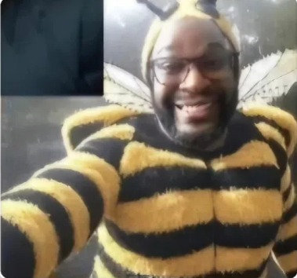

Seita de abelhas: "Seita do Ferrão" é vista atormentando a população
SÃO PAULO — O que parecia ser apenas mais um incidente isolado envolvendo enxames migratórios transformou-se em uma das mais bizarras e aterrorizantes crises de segurança pública dos últimos anos. Moradores de bairros residenciais têm evitado sair às ruas após o amanhecer, não por medo de criminosos comuns, mas de um inimigo alado, disciplinado e, segundo testemunhas, aparentemente organizado.
Apelidada pela população de "Seita do Ferrão", a colônia de abelhas teria abandonado o comportamento considerado normal para a espécie. Relatos apontam para perseguições coordenadas, vigilância aérea e ataques direcionados contra pessoas que circulam por determinadas áreas.
No centro dessa história está uma figura que parece ter saído de um pesadelo: Gabriel Lindo Augusto, homem que os supostos seguidores do enxame passaram a chamar de "ZumZum".
O Terror Alado: quando o inseto deixa de ser vítima e vira juiz
Para entender a gravidade da situação, basta conversar com moradores da região afetada. Segundo os relatos, o comportamento do enxame teria mudado drasticamente nas últimas semanas. As abelhas não apenas atacariam quando ameaçadas, mas permaneceriam próximas às vítimas, perseguindo veículos e concentrando-se em determinados pontos da cidade.
Patrulhamento sistemático: moradores afirmam que grupos de abelhas sobrevoam janelas e ruas em horários aparentemente determinados, como se estivessem realizando rondas de reconhecimento.
Agressividade seletiva: pessoas que utilizam perfumes com fragrâncias florais ou roupas de determinadas cores afirmam ter se tornado alvos frequentes dos enxames.
O fator psicológico: o zumbido constante ao redor dos quarteirões criou um clima de tensão entre os moradores. Escolas chegaram a suspender atividades e alguns estabelecimentos passaram a fechar as portas mais cedo.
"Não são abelhas normais. Elas nos cercam como se estivessem executando ordens. Minha filha foi perseguida por três quadras até conseguir se esconder dentro de uma farmácia", relata um morador que preferiu não se identificar.
Quem é Gabriel Lindo Augusto? O profeta do mel e do caos
Se o comportamento do enxame já desafia a lógica, a suposta ideologia por trás dele parece ainda mais absurda. Gabriel Lindo Augusto, um homem que teria se isolado em um sítio nos arredores da região metropolitana, surgiu nas redes sociais apresentando-se como líder espiritual de uma comunidade que afirma possuir uma ligação especial com as abelhas.
Em transmissões ao vivo repletas de discursos apocalípticos, Augusto prega o que chama de "Purificação do Concreto". Segundo ele, a humanidade teria ocupado espaços que deveriam pertencer à natureza e as abelhas seriam responsáveis por restaurar esse equilíbrio.
Em uma das transmissões que teria viralizado, Gabriel Augusto aparece diante de uma colmeia e faz um discurso direcionado aos seus seguidores:
"Vocês chamam de ataque aquilo que é apenas justiça. Durante séculos, o homem tomou o território das abelhas, destruiu suas casas e transformou a natureza em concreto. Agora o ferrão responde. A Seita do Ferrão não quer destruir a cidade. Ela quer lembrar quem realmente pertence a este mundo."
A declaração provocou milhares de comentários nas redes sociais. Enquanto alguns usuários tratavam o discurso como uma piada elaborada, outros demonstraram preocupação com a possibilidade de que o homem estivesse incentivando comportamentos perigosos.

A suposta "música da colmeia"
Outro elemento que chamou atenção foi a existência de gravações publicadas por Augusto. Nos vídeos, sons graves e repetitivos são reproduzidos enquanto grandes grupos de abelhas aparecem ao fundo.
Seguidores do homem afirmam que as gravações seriam uma forma de comunicação com os insetos. Especialistas, porém, questionam completamente essa interpretação e afirmam que não existem evidências de que humanos possam controlar enxames dessa maneira.
Ainda assim, a teoria da chamada "música da colmeia" ganhou força entre moradores assustados, alimentando ainda mais os rumores sobre a suposta seita.
O impasse das autoridades
A Polícia Civil, o Corpo de Bombeiros e órgãos de proteção ambiental estariam acompanhando a situação. Uma tentativa de remoção tradicional do enxame teria falhado na última sexta-feira, quando as equipes encontraram uma quantidade incomum de abelhas concentradas na região.
A área próxima à propriedade associada a Augusto foi parcialmente isolada enquanto as autoridades tentam determinar a origem dos enxames e verificar se existe alguma relação entre o homem e o comportamento observado pelos moradores.
A Dra. Cecília Moraes, especialista em ecologia comportamental, afirma que a situação, caso confirmada, exigiria uma investigação cuidadosa.
"É importante separar fatos de rumores. Abelhas podem apresentar comportamentos extremamente coordenados, mas isso não significa que estejam seguindo ordens humanas. Precisamos analisar o ambiente, a presença de feromônios e outros fatores antes de tirar qualquer conclusão."
Enquanto as autoridades investigam o caso, moradores continuam evitando determinadas áreas da cidade. Nas redes sociais, mapas improvisados indicando supostos territórios dominados pelo enxame se espalham rapidamente, embora nenhum deles tenha sido confirmado oficialmente.
Para Gabriel Augusto, entretanto, a mensagem parece continuar sendo a mesma. Em uma última publicação, acompanhada por uma fotografia de uma enorme colmeia, ele escreveu:
"Quando ouvirem o primeiro zumbido, já será tarde demais. O ferrão não é o fim. É apenas o começo."
Na cidade que antes dormia em paz, uma pergunta permanece no ar: trata-se apenas de uma sequência incomum de ataques de abelhas ou existe realmente alguém por trás da chamada Seita do Ferrão?